Agent
The pi orchestrator
Markwork can orchestrate an external harness: a kanban card assigned to pi ([agent:: pi]) is worked on by pi in another project folder, for example a code repo, not in the Markwork work folder.
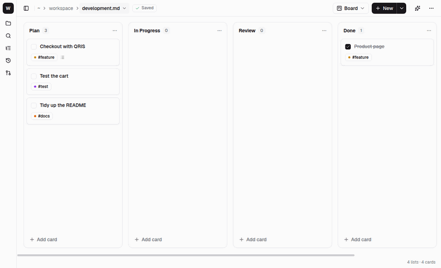
pi has to be installed first (and git, for a worktree per card). The Programs page says whether they are found, and how to install them; Home lists what is missing in its Set up section.
Assigning cards
---
layout: board
project: web-ecommerce ← the default project of the board
---
## Plan
- [ ] Checkout with QRIS #feature [agent:: pi]
- [ ] Test the cart #project/shop-admin [agent:: pi] ← the project tag wins over the frontmatter- Write
[agent:: pi]after the card title, or fill in Assigned to in the card edit dialog. - Right-click the card → Work on it with pi.
- The project is taken from the
#project/nametag or from the board frontmatterproject: name. The project folder is asked for once and then remembered in the settings; a card without a project is given a tag from the name of its folder.
When it starts, the card moves to the In Progress list. When it finishes, it moves to Review with the note ↳ pi done …: summary. If it fails, the card stays where it is with the note ↳ pi failed …: reason.
Notes as context
Pi works in the project folder, so it cannot read the notes in the Markwork work folder. Link the notes on the card with [[ ]], and Markwork copies their contents into the prompt.
- [ ] Checkout with QRIS [[Spec#Payment]] [agent:: pi]
Follow the decisions in [[Meeting Notes]].- Links in the title and in the notes of the card are both included, at most 10 per card. The names are looked up with the same rules as Ctrl+click in the editor.
[[Note#Section]]only copies the part under that heading, up to the next heading of the same level.- The contents go into the Related notes from Markwork section of the prompt, wrapped in a code block. Every note is cut at 8,000 characters, and the total is 24,000 characters. A note that is not found is still named, so that pi knows something is missing.
- An open document is read from its editor, so unsaved edits are included.
- The complete prompt, including the contents of the notes, is visible in the pi log.
- The contents of the notes are taken at Work on it with pi. Reply to pi continues the same session without copying them again.
On the board, a link in a card title can be clicked to open its note, and a link in the notes of a card is shown as a ↗ name row below the chip. The notes field in the card edit dialog suggests names when you type [[.
Card status
| Chip | Meaning |
|---|---|
| ◇ | Assigned |
| ◌ | Queued: the project already has as many cards working as it allows |
| ● | Working |
| ⏸ | Waiting for your answer |
| ✓ / ✕ / ■ | Done / failed / stopped |
A project folder that is not a Git repository (or has worktrees turned off) is worked on by one harness at a time. In a Git repository each card gets its own worktree, and as many cards as the project allows (2 by default) work at the same time. Other cards queue and start automatically.
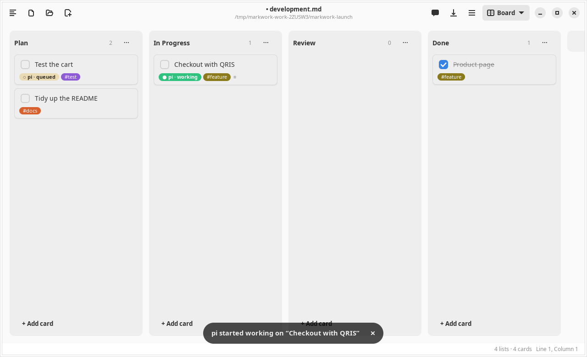
A worktree per card, and reviewing it
When the project folder is in a Git repository, Work on it with pi first makes a Git worktree for the card: a folder of its own next to the project (../.markwork-worktrees/<project>/<card>) on a new branch markwork/<card> from the branch the project folder is on. Pi works there. The project folder itself is not touched, so several cards can work at once without overwriting each other.
- The card gets a
[branch:: markwork/…]field, so its worktree is found again after Markwork restarts. - When pi finishes, the toast and the card menu offer Review Changes. The review opens in place of the board: the files pi changed (committed or not, new files included) compared with where the branch started, the commits it made, what it said, and the commands it ran according to its log.
- The review has three tabs: Changes (the diff of each file), Summary (what pi said it did), and Log (the commands it ran). The checkbox in front of a file includes it in the merge.
- Click a line of the diff to leave a comment. Reply with N Comments… sends them to pi (you can edit the text first); pi goes on in the same worktree, in the same session when Markwork still has it.
- Merge commits what pi left uncommitted, merges the branch into the base branch in the project folder, removes the worktree, and moves the card to Done. The arrow next to it offers Squash, Keep the Branch, Remove the Worktree, and Discard…. Uncheck files to merge only some of them, as one commit.
- Create Pull Request… (also in the arrow menu) sends the branch to the project's
origininstead of merging it here, when that is a Forgejo or Gitea server. It asks for the title (the card's), the description (what pi said and its commits), and how to send: a branch in the repository, your fork, or AGit. Nothing is committed, pushed, or sent before you press Send; then what pi left uncommitted is committed on the branch, the branch is pushed as it is, and the pull request is opened. The card stays in Review and the worktree stays, with the note↳ pull request #N opened …, so you can read the comments on the server and Reply… to pi; the menu item then reads Open Pull Request #N. It needs an access token for that server (the one of the Pull Requests tab); the menu item is off, with the reason, when the project has noorigin, when it is on GitHub or GitLab (not supported yet), or when pi changed nothing. If the push or the pull request fails, you are told why and the worktree and the card are left as they were. - Merging needs the project folder to be on the base branch with no uncommitted change of its own. When the base moved on and the branch would conflict, the review says in which files and offers Ask pi to Update Its Branch.
- Preferences → Agents → Projects sets, per project: worktrees on or off, how many cards at the same time, the base branch, another folder for the worktrees, and whether the branch is kept after a merge. It also lists the card worktrees that exist and can remove them.
- On another machine (through markworkd) the worktrees are made and read there: Git runs through the daemon, so it must be allowed (
gitinprogramswhen that list is set), and the worktree folder must be inside itsroots. The push of Create Pull Request… runs there too (the machine must be able to reach the server), with the access token in the environment of that one git call; for that the daemon'senv_allowmust containGIT_CONFIG_*, otherwise the push is refused with a message that says so. The daemon keeps the call's environment in its run record (readable only by its user) until Markwork forgets the run, which is right after git ends. The default, next to the project, is inside the same root when the root is the project's parent. Open Terminal openssshto the worktree there.
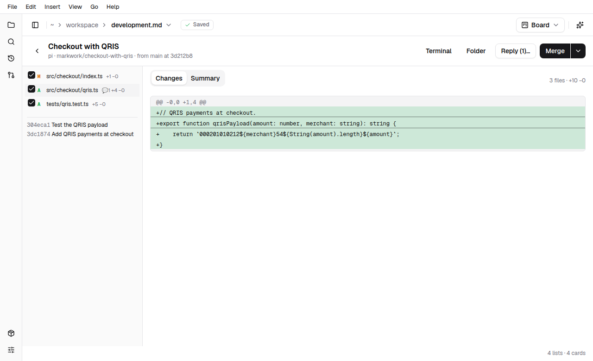
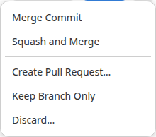
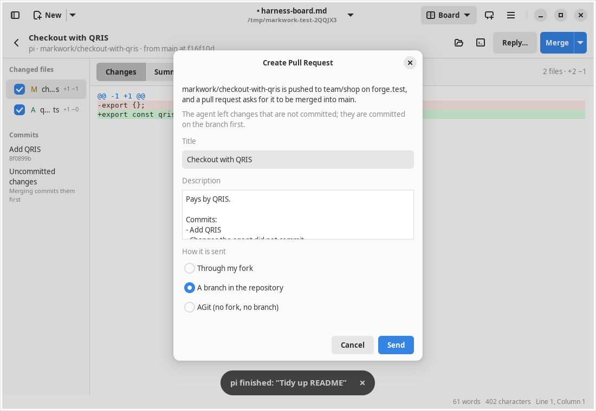
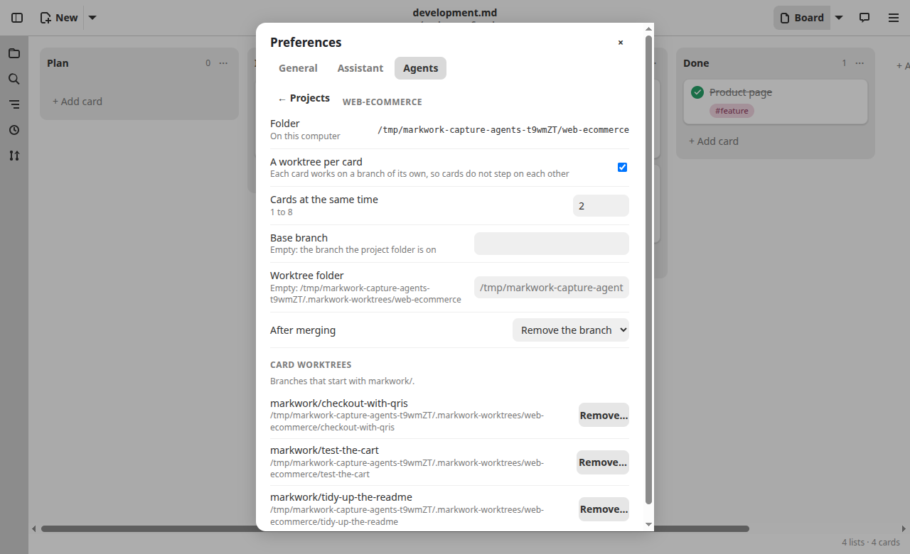
Answering pi
Pi runs in RPC mode, so its conversation can be continued from Markwork:
- Questions. When the answer of pi ends with
?, the card becomes ⏸ and stays in In Progress. Right-click → Answer pi… opens the question with an answer box. - Permission and input. A pi extension that asks for permission (e.g. a confirmation before
rm -rf) appears in the same dialog: Allow/Deny, a choice, or an input. - Later leaves pi waiting; End without replying closes its session.
- Steer pi… while pi works: the guidance is received before the next step, without stopping the work.
- Reply to pi… after it finishes: continues the same pi session so the card is worked on again.
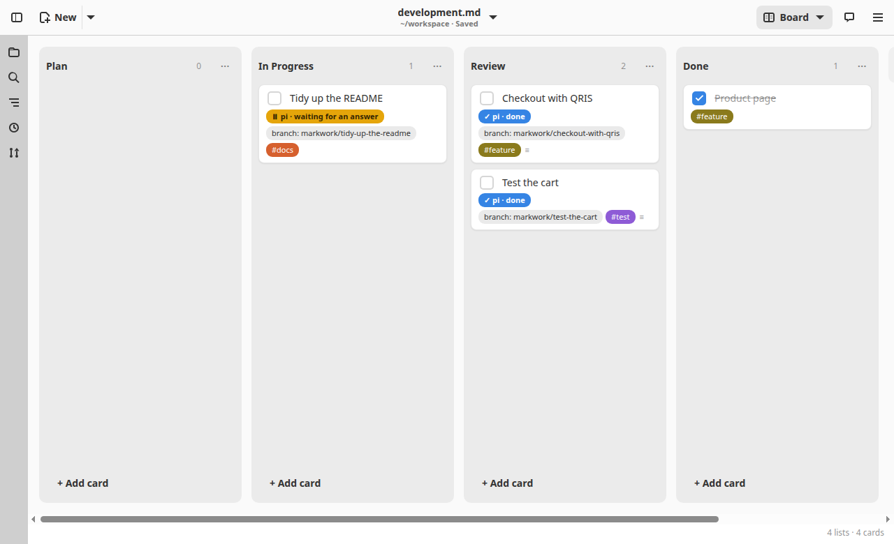
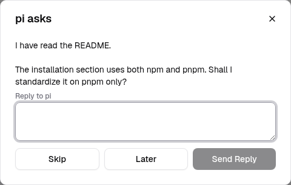
Log and control
The card menu also has:
- View pi Log: tools, reasoning, answers, your requests and answers, tokens, cost, and the session id for
pi --session <id> - Stop pi / Cancel Queue
- Remove Assignment and Change Project Folder…
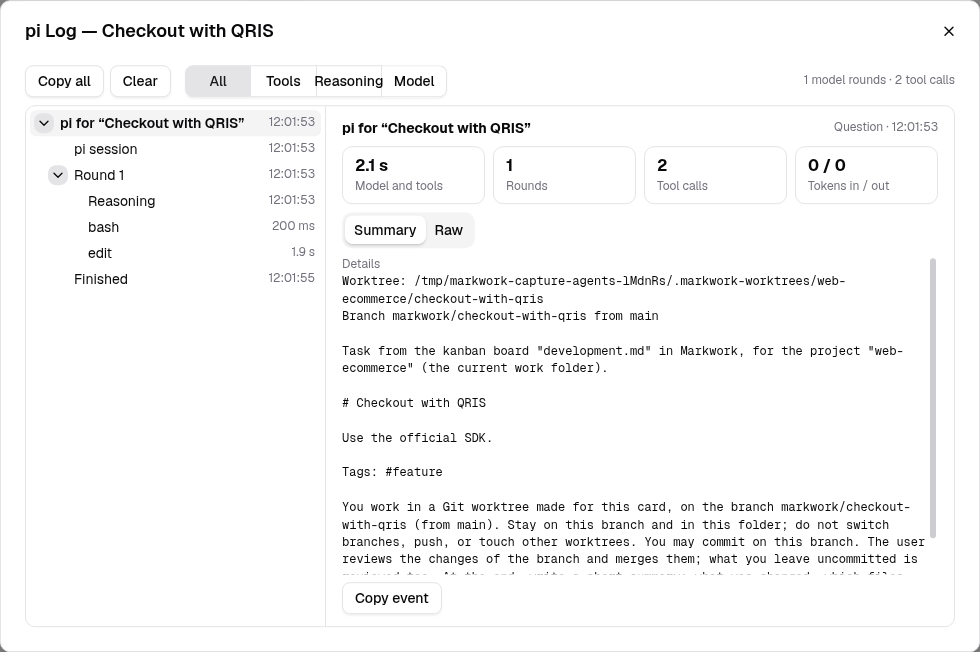
Agents that keep working: markworkd
By default pi is a child of the Markwork window, so closing the window stops it. markworkd is a small program that runs the agents instead, on this computer or on another one (a VPS, a NAS), so they keep working when Markwork is closed or the connection drops. It never looks inside what an agent says; Markwork still reads the log, asks you the questions, and moves the cards.
- Install
markworkdwhere the agents should run (a single binary; seemarkworkd/README.mdin the source) and give it the folders agents may work in, in~/.config/markworkd/config.json:{"roots": ["/home/you/projects"]}. Without roots it refuses every run. - In Preferences → Agents, choose This computer (markworkd), or add a machine with Add Machine… (a host from your
~/.ssh/config, oruser@host) and choose it under Run agents. Markwork connects withsshin the background, so the key must work without a password prompt (an ssh-agent is fine). - On another machine the project folder is asked as a typed path (an absolute path on that machine), and remembered per machine.
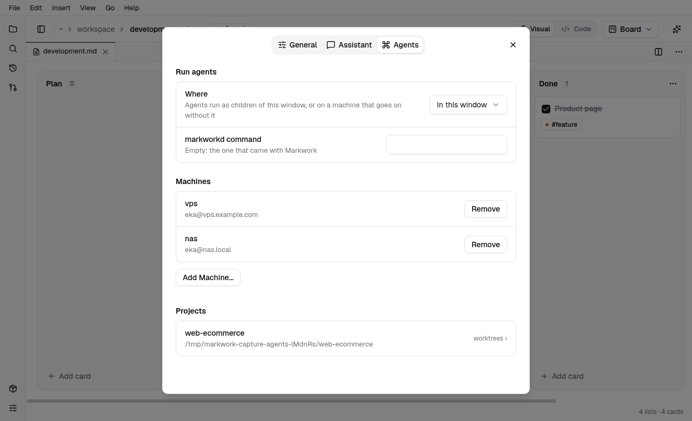
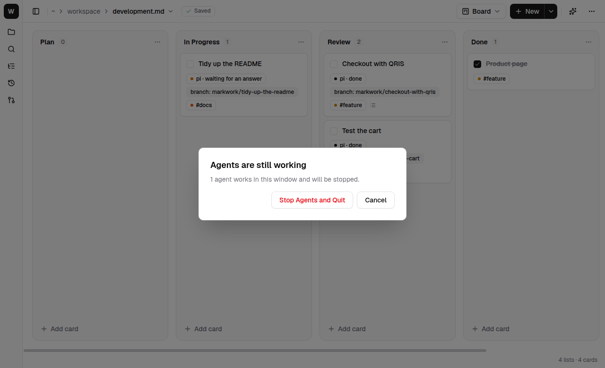
- Closing the window asks what to do: Keep Running and Close, Stop Agents and Close, or Cancel. Agents that are children of the window (the default) can only be stopped, so that question has no Keep Running.
- Opening Markwork again finds the runs of your cards on the machine, replays what happened while you were away into the log, and asks again for an answer that is still open. A run that finished meanwhile is finished as usual: the card gets its result and moves to Review. The daemon itself may restart (an upgrade, a crash) without ending anything: each agent is held by a small helper that keeps running and hands its output to the next daemon. Only a reboot or a killed helper ends a run; then the card says it was interrupted and Resume in its menu continues the pi session where it stopped.
- Home says Agents run on … and whether the machine can be reached; when it cannot, Markwork says why and keeps trying. A line that was being sent when the connection dropped is not sent again (it could repeat a prompt); the log tells you.
- Runs that were queued behind another card in the same project are kept only by the window: closing it does not start them later.
Access boundaries
In a Git project that is the card's worktree, and nothing reaches the project folder until you merge it from the review. Without Git (or with worktrees off) it is the project folder itself: review the result there. Pi does not ask for tool permission by itself; permission requests come from the pi extensions you install, such as permission-gate. A worktree does not stop pi from running commands that reach outside it.
- The Markdown only names the name of the project. The name is mapped to a folder that can only be filled in through the choose-folder dialog, so a card or an agent cannot point the harness at an arbitrary folder.
- The Markwork work folder, its contents, its parents, the root, and relative paths are rejected as a project folder.
- The contents of the notes linked with
[[ ]]from the Markwork work folder are sent to pi as part of the prompt (and to the model provider that pi uses). Do not link notes that must not leave. Only Markdown files in the work folder can be linked; dot folders, symlinks, and paths outside the work folder are not included. - Markwork itself writes to the project folder only when you merge a card's worktree from the review: a commit on the base branch, after you confirm. Closing the window stops every harness that is a child of the window; with markworkd you can choose to leave them running.
- On another machine, what may run is decided there: markworkd runs only the programs and in the folders its own configuration allows, whatever a card or the Markdown says.